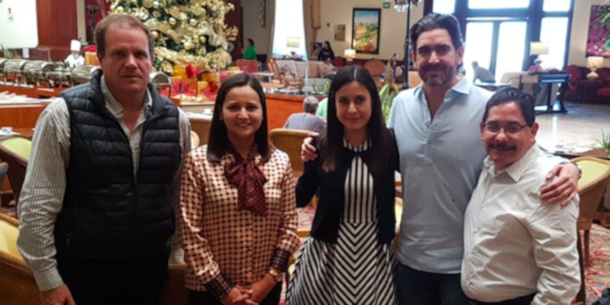

Consejeros de Participacion Ciudadana del Sistema Anticorrupción del Estado de Coahuila de Zaragoza (SAC), se reunieron el 5 de noviembre de 2018, con Carlos Finck Salcido Presidente Activo de CANIRAC Laguna y Coordinador del Grupo Empresarial Lagunero, con los objetivos de dar a conocer las líneas generales del Programa de Trabajo del CPC para el 2018-2019, así como, difundir la convocatoria abierta para participar en la terna del Secretario Técnico de la Secretaría Ejecutiva del SAC.
Ana Yuri Solís, Presidenta del Consejo de Participación Ciudadana explicó las acciones más importantes que se llevarán a cabo en los siguientes meses, por ejemplo, promover la realización de un programa de mejora regulatoria con el propósito de reducir tiempos y costos de trámites de gobierno, además de buscar los mecanismos que impidan que se presenten actos de corrupción.
Por su parte, Finck Salcido expuso la necesidad de que el Consejo de Participación Ciudadana impulse acciones concretas que den resultados en el corto plazo y generar mayor acercamiento con el sector empresarial.
En referencia a la convocatoria para la terna del Secretario Técnico del SEA, los consejeros comentaron sobre el importante papel que tiene esta figura dentro del Sistema Anticorrupción de Coahuila, para la cual, solicitaron a Finck Salcido el apoyo para la difusión en el gremio empresarial que él representa.
